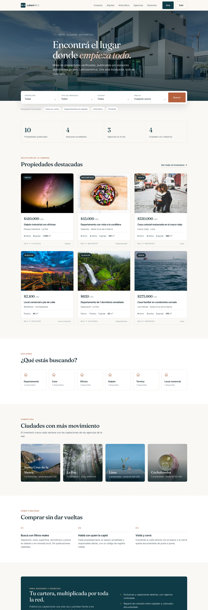

La app, sin maqueta
Capturas de la aplicación corriendo con datos cargados. Elegí una pantalla.

Las reglas no están en el código.
Están en la base.
Una validación en la aplicación protege el camino que pasa por ese código. Una restricción declarada en el motor protege también la carga masiva, la migración y la API que todavía no existe.
> INSERT … un asesor en dos agencias a la vez
ERROR: duplicate key value violates unique constraint
"uq_una_membresia_vigente_por_asesor"
> INSERT … publicar sin que conste quién lo aprobó
ERROR: new row violates check constraint
"ck_publicado_requiere_revisor"-
Una membresía vigente por asesor
El vínculo con la agencia y su historial son la misma tabla. Dos tablas se desincronizan el día que alguien cambia de agencia sin cerrar el registro.
-
Una captación vigente por inmueble
El contrato con el propietario tiene tipo, vigencia y comisión pactada. No puede haber dos abiertos sobre la misma propiedad.
-
Publicado exige revisor
Ningún aviso llega al portal sin que quede registrado qué broker lo aprobó. La responsabilidad es rastreable, no declarativa.
-
La dirección exacta tiene dueño
El público ve la zona y un punto desplazado dentro de 300 m. La calle y la coordenada real las ve quien captó el inmueble.
Veintiuna en total —doce de unicidad, nueve de verificación— y las veintiuna se verifican una por una en la suite: se intenta escribir el estado prohibido y se comprueba que el motor lo rechaza.
Correlo vos
PostgreSQL con PostGIS, un entorno virtual y datos de demostración cargados.
$ git clone https://github.com/Omarjust/mls-inmobiliario.git
$ cd mls-inmobiliario/MLS
$ python -m venv ../venv && ../venv/bin/pip install -r requirements.txt
$ createdb mls_db && psql -d mls_db -c "CREATE EXTENSION postgis;"
$ ../venv/bin/python manage.py migrate
$ ../venv/bin/python manage.py seed_demo --reset
$ ../venv/bin/python manage.py runserver
El comando de demostración deja tres agencias, cuatro asesores y doce
inmuebles, dos de ellos esperando aprobación para que la cola del broker
tenga contenido. Entrás como broker con
ana.rojas@latammls.com / demo12345.